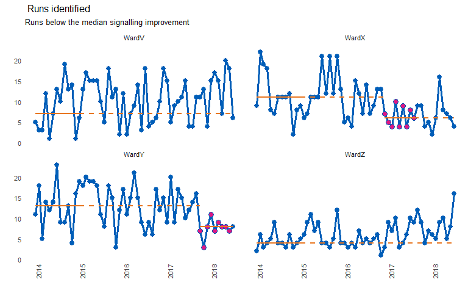

Automated analysis and re-basing of run charts at scale.
Online documentation and vignettes : runcharter


Installation
You can install runcharter from github with:
# install.packages("devtools")
devtools::install_github("johnmackintosh/runcharter")
# to ensure the vignettes are built or ensure latest version is installed:
devtools::install_github("johnmackintosh/runcharter",
build_vignettes = TRUE, force = TRUE)The rationale for the package is to analyse multiple run charts at once. More importantly, the package will identify a run of n successive points on the desired side of the median line, and will recalculate / rebase the median accordingly. Each time a run occurs, the median will be rebased. This helps to track improvements over time.
The default is to plot a faceted plot, allowing ggplot2 to handle the axis limits. You can specify the number of columns in the faceted plot however, and you can also specify both the breaks for date labels on the x axis, and whether the y axis limits are fixed, or can vary by facet panel.
Function arguments and defaults
A default run of 9 is specified as that is the length of run used by the IHI for its patient safety initiatives worldwide.
library(runcharter)
runcharter(df = signals,
med_rows = 13,
runlength = 9,
direction = "below",
datecol = NULL,
grpvar = NULL,
yval = NULL,
facet_cols = NULL,
facet_scales = "fixed",
chart_title = NULL,
chart_subtitle = NULL,
chart_caption = NULL,
chart_breaks = NULL,
line_colr = "#005EB8", # blue
point_colr ="#005EB8", # blue
median_colr = "#E87722", # orange
highlight_fill = "#DB1884") # magentaThe function will return a plot and a summary table showing the original baseline medians, and any sustained runs of improvement beyond the baseline period.
library(runcharter)
#> Loading required package: data.table
runcharter(signals,
direction = "below",
datecol = "date",
grpvar = "grp",
yval = "y",
chart_title = " Runs identified",
chart_subtitle = "Runs below the median signalling improvement")
#> $runchart
#>
#> $sustained
#> grp median start_date end_date extend_to run_type
#> 1: WardV 7 2014-01-01 2015-01-01 2018-07-01 baseline
#> 2: WardX 11 2014-01-01 2015-01-01 2016-12-01 baseline
#> 3: WardY 13 2014-01-01 2015-01-01 2017-10-01 baseline
#> 4: WardZ 4 2014-01-01 2015-01-01 2018-07-01 baseline
#> 5: WardX 6 2016-12-01 2017-08-01 2018-07-01 sustained
#> 6: WardY 8 2017-10-01 2018-06-01 2018-07-01 sustainedRuns in both directions
The package allows for finding runs in both directions (above and below the median). Generally, for improvement purposes, you would only need to identify runs in one direction at a time. In other words, if you are trying to reduce adverse events, improvement will be evidenced with a run below the median. Therefore, you would not rebase the median if a run of points above the median was observed.
However, for longer term monitoring, it may be necessary to identify and ‘reset’ a median if a sustained deterioration in performance occurs. Ideally, you should move to using SPC charts for monitoring purposes.
library(runcharter)
signals %>%
runcharter(med_rows = 7,
runlength = 5,
direction = "both",
datecol = "date",
grpvar = "grp",
yval = "y",
chart_title = "Runs in both directions",
chart_subtitle = "Runs of 5, from median calculated over first 7 data points in each location")
#> $runchart
#>
#> $sustained
#> grp median start_date end_date extend_to run_type
#> 1: WardV 5 2014-01-01 2014-07-01 2015-01-01 baseline
#> 2: WardX 11 2014-01-01 2014-07-01 2014-11-01 baseline
#> 3: WardY 14 2014-01-01 2014-07-01 2014-12-01 baseline
#> 4: WardZ 4 2014-01-01 2014-07-01 2015-01-01 baseline
#> 5: WardV 15 2015-01-01 2015-05-01 2015-10-01 sustained
#> 6: WardX 7 2014-11-01 2015-03-01 2015-04-01 sustained
#> 7: WardY 19 2014-12-01 2015-04-01 2015-06-01 sustained
#> 8: WardZ 7 2015-01-01 2015-05-01 2015-12-01 sustained
#> 9: WardV 11 2015-10-01 2016-02-01 2018-07-01 sustained
#> 10: WardX 11 2015-04-01 2015-08-01 2016-12-01 sustained
#> 11: WardY 15 2015-06-01 2015-10-01 2017-10-01 sustained
#> 12: WardZ 4 2015-12-01 2016-04-01 2017-06-01 sustained
#> 13: WardX 5 2016-12-01 2017-04-01 2018-02-01 sustained
#> 14: WardY 7 2017-10-01 2018-02-01 2018-07-01 sustained
#> 15: WardZ 9 2017-06-01 2017-10-01 2018-07-01 sustained
#> 16: WardX 7 2018-02-01 2018-06-01 2018-07-01 sustainedDesign decisions and similar packages
This package makes no attempt to identify or highlight ‘trends’ (consecutively increasing or decreasing points) or shorter ‘shifts’ of runs below the median. In 8 years of working with QI data, I very rarely see trends, and when they do appear, they tend to result after a period of process degradation, when the process begins to return back to its natural median state.
In addition, research by qicharts2 author Jacob Anheoj shows that the trend rule is not reliable. There are no plans to add tests to identify trends to the package functionality.
If you want to apply the rules for trend , in addition to rebasing run charts, then you should consider using the runchart package by Joseph Adams.
qicharts2 creates run and SPC charts. These can be rebased, but you must specify when to do so. Also, the analysis is based on the author’s own rules and not the rules typically used in healthcare (e.g. the rules promoted by the IHI).
Turn off run chart analysis
You can avoid rebasing medians by setting ‘runlength’ to 0 (zero). This will plot the runcharts with the original baseline medians, but no runs analysis will take place.
library(runcharter)
signals %>%
runcharter(med_rows = 13,
runlength = 0,
datecol = "date",
grpvar = "grp",
yval = "y",
direction = "both")
#> $runchart
#>
#> $sustained
#> grp median start_date end_date extend_to run_type
#> 1: WardV 7 2014-01-01 2015-01-01 2018-07-01 baseline
#> 2: WardX 11 2014-01-01 2015-01-01 2018-07-01 baseline
#> 3: WardY 13 2014-01-01 2015-01-01 2018-07-01 baseline
#> 4: WardZ 4 2014-01-01 2015-01-01 2018-07-01 baselineSimilarly, you can plot basic line charts by setting ‘med_rows’ to 0 (zero)
library(runcharter)
signals %>%
runcharter(med_rows = 0,
runlength = 9,
datecol = "date",
grpvar = "grp",
yval = "y",
direction = "both")
#> $runchart